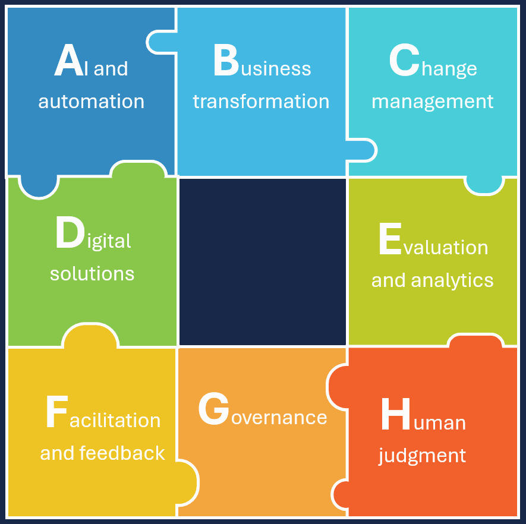

Ingrid Richrath
Senior Learning & Development Leader | Healthcare Transformation | Organizational Change Management

AI and Automation
"Exploring technologies to improve processes, eliminate friction, increase efficiency, and create new ways of working."
Business Transformation
"Starting with the business problem to understand the processes, workflows, roles, and operating models."
Change Management
"Helping stakeholders navigate change through engagement, readiness, and resistance management."
Digital Solutions
"Connecting technology with usability, adoption, and sustainable behavior change."
Evaluation and analytics
"Using data to learn identify gaps, measure outcomes, and demonstrate business value."
Facilitation and Feedback
"Bringing stakeholders together, creating alignment, and using feedback to continuously improve the solution."
Governance
"Ensuring innovation moves forward within the appropriate framework for risk, compliance, security, and accountability."
Human Judgment
"Challenging outputs, validating accuracy, identifying potential failures, applying judgment, and knowing when a human needs to make the call."

AI and Automation
"Exploring technologies to improve processes, eliminate friction, increase efficiency, and create new ways of working."Business Transformation
"Starting with the business problem to understand the processes, workflows, roles, and operating models."
Change Management
"Helping stakeholders navigate change through engagement, readiness, and resistance management."
Digital Solutions
"Connecting technology with usability, adoption, and sustainable behavior change."
Evaluation and analytics
"Using data to learn identify gaps, measure outcomes, and demonstrate business value."
Facilitation and Feedback
"Bringing stakeholders together, creating alignment, and using feedback to continuously improve the solution."
Governance
"Ensuring innovation moves forward within the appropriate framework for risk, compliance, security, and accountability."
Human Judgment
"Challenging outputs, validating accuracy, identifying potential failures, applying judgment, and knowing when a human needs to make the call."